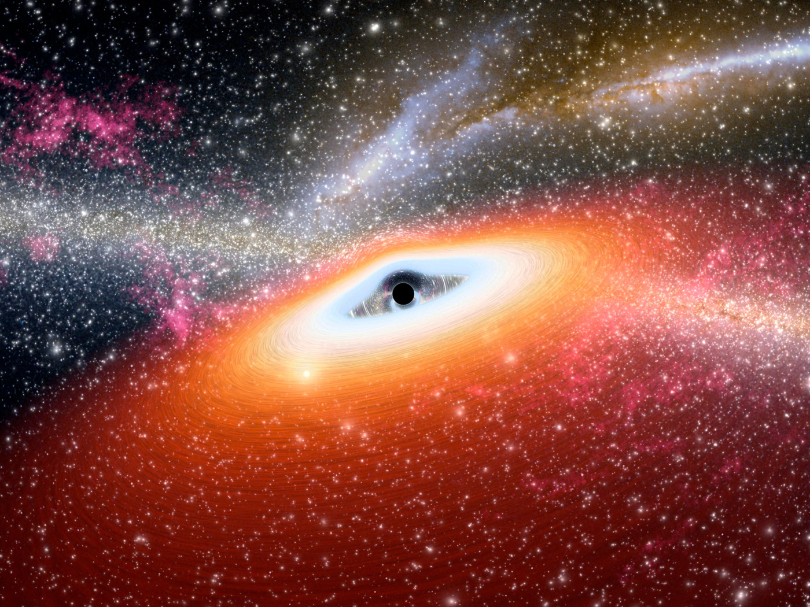

Black Holes: Giants at the Heart of Every Galaxy
By Physics Society • 2025-09-06Black holes are some of the most fascinating and extreme objects in the universe, formed when massive stars collapse under their own gravity. For decades, astronomers have suspected that every large galaxy harbors a supermassive black hole at its core — including our own Milky Way, whose central black hole, Sagittarius A*, is over 4 million times the mass of the Sun.
The Life Cycle of a Star and Birth of a Black Hole
When a star several times heavier than our Sun runs out of fuel, its core collapses in a dramatic supernova explosion. If the leftover core is massive enough, it becomes a black hole — a region of space where gravity is so strong that not even light can escape. This process creates stellar-mass black holes, typically ranging from a few to a few dozen solar masses.
Supermassive Black Holes at Galactic Centers
Observations of stars orbiting unseen objects at incredible speeds led astronomers to conclude that the centers of galaxies host supermassive black holes, millions or even billions of times the Sun’s mass. These cosmic giants likely formed through a combination of early-universe mergers, accretion of gas, and runaway stellar collapse.
Intermediate-Mass Black Holes: The Missing Link?
While stellar-mass and supermassive black holes are well documented, astronomers have long wondered about intermediate-mass black holes (IMBHs) — objects between 100 and 100,000 solar masses. Finding them has been difficult because they’re rarer and harder to detect. But recently, astronomers using the Chandra X-ray Observatory and gravitational wave detectors have found strong candidates for IMBHs, filling in a missing evolutionary step between stellar collapse remnants and the behemoths anchoring galaxies.
Why Black Holes Matter
Far from being cosmic vacuum cleaners, black holes shape galaxy evolution. Jets and radiation from actively feeding black holes regulate star formation, and gravitational wave events from black hole mergers allow scientists to test general relativity itself.
What’s Next
Future missions like the James Webb Space Telescope and next-generation gravitational wave detectors will help scientists trace the growth of black holes across cosmic history, offering clues to how the first galaxies formed and evolved.
In the meantime, our Milky Way’s own supermassive black hole remains a gentle giant — for now.